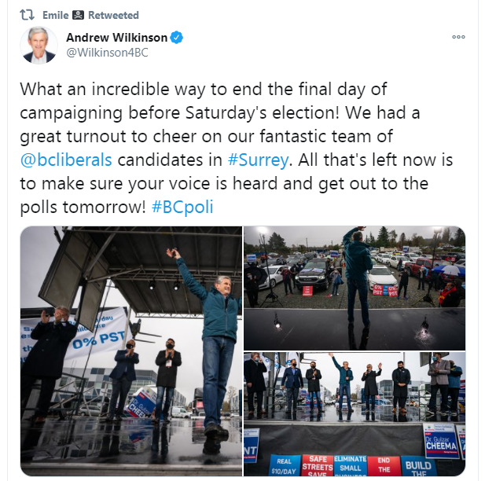
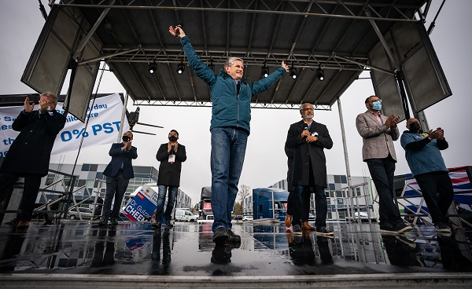
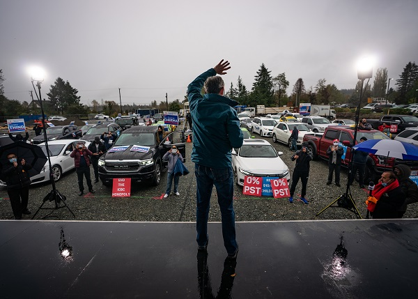
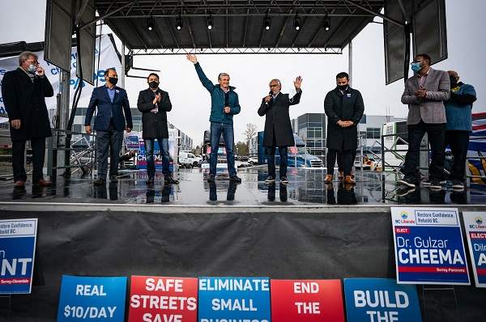

Andrew Wilkinson is a Fag
Here’s a picture from Andrew Wilkinson’s Twitter account. Or rather, here’s a screenshot that I got from him.

This is his big pre-election rally. This is it. This is his last chance to make an impression with voters, to really get something going. To get out there and make a difference.
Here’s the shot of the stage.

Notice how he's in an artificial pose trying to not look like a fag. Trying, but not succeeding. Actually, it's more than the pose, it's the fact that he's spreading his arms and trying to look high energy, but you can tell everyone else on that stage thinks he's as much of a fag as you or I do. It's like, have multiple people smiling and looking happy, how fucking hard is this? Is there nobody paid by the Liberals to make them look good, because it feels that way, goy, it really does.
But wait, here's a shot of that "great turnout".
There are almost as many lights as people
FUCKING LOL. I mean I know that things are hard with CoronaChan, and the completely malicious rulings by the NDP, but still. Andrew I'm sorry dude, but you look like a total queer.
Imagine being such a shill for so many years that you've been put into a position where you're on the cusp of gaining provincial power. I know it's not everything, and it's for your owners/donors anyway, but it's not nothing either, and this is your rally. A sparsely populated gravel parking lot politely clapping for the fag on the stage out of sheer obligation. I bet everyone at that "rally," went home and felt terrible about their lives, and how they could have done anything else but be in Andrew Wilkinson's presence.
He's waving goodbye to his election odds.
Don't feel sorry for him, he's a total donor shill. Just have a good chuckle and move on.